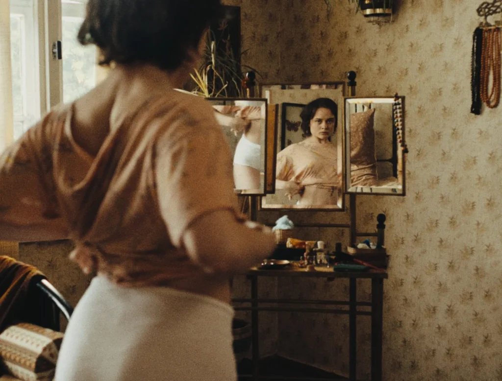

Güncel Almanya sinemasının dikkat çeken ödüllü örneklerini Türkiye’de seyirciyle buluşturan Kino 2025 programı İzmir’e konuk oluyor. 25-29 Kasım tarihleri arasında İstinye Park Teras Renk Sineması’nda gerçekleştirilecek gösterimler tamamen ücretsiz.
Goethe-Institut’un German Films katkılarıyla düzenlendiği Kino programı, her yıl güncel Almanya sinemasında öne çıkan ve uluslararası festivallerde gösterim şansı yakalayan filmleri Türkiye’de seyirciyle buluşturuyor. Hazırlanan program yıl içerisinde Türkiye’nin farklı şehirlerindeki etkinliklerle işbirliği hâlinde gösterilirken, seyirciye Almanya sinemasının güncel eserlerini bir arada takip etme imkânı sunuluyor. Bu yılki yolculuğuna 44. İstanbul Film Festivali kapsamındaki gösterimlerle başlayan ve yıl içerisinde pek çok farklı şehre konuk olan Kino 2025: Alman Filmleri Türkiye’de programının şimdiki durağı ise İzmir. Kino 2025’in İzmir gösterimlerinin açılışı Christian Petzold’ün Aynalar No:3 Okyanusta Bir Tekne (Miroirs No.3, 2025) filmiyle yapılacak. Geçirdiği araba kazasında erkek arkadaşını kaybeden genç müzik öğrencisi Laura’nın iyileşme sürecini takip eden film, travmanın etkilerini farklı yönlerden ele alıyor. Petzold’ün Transit (2018), Undine(2020), Kızıl Gökyüzü (Roter Himmel, 2023) gibi filmlerinde beraber çalıştığı Paula Beer’i başrole taşıyan film, Cannes’daki prömiyerinin ardından Lisbon Film Festivali’nden Jüri Özel Ödülü kazandı.

Cannes’da Jüri Ödülü’ne uzanan ve Almanya’nın Oscar adayı olarak belirlenen Mascha Schilinski imzalı Düşüşün Tınısı (In die Sonne schauen, 2025) ve Berlinale’de Altın Ayı için yarışan ve Sanat Sinemaları Birliği’nden Mansiyon kazanan Frédéric Hambalek imzalı Ne Halt Ettiğinizi Biliyorum (Was Marielle weiß, 2025) gibi filmlerin dikkat çektiği seçkide yer alan diğer filmler ise şöyle: Chiara Fleischhacker imzalı Vena (2024), Andres Veiel imzalı Riefenstahl(2024), Sarah Miro Fischer imzalı Kardeş Yüreği (Schwesterherz, 2025) ve Ulrich Köhler imzalı Gavagai (2025). Kino 2025 programı İzmir’deki gösterimlerin ardından 7-14 Aralık tarihlerinde 3. Amed Film Festivali kapsamında Diyarbakır seyircisiyle buluşacak. Programla ilgili detaylı bilgiye Goethe Institut’un internet sitesi üzerinden ulaşmak mümkün.